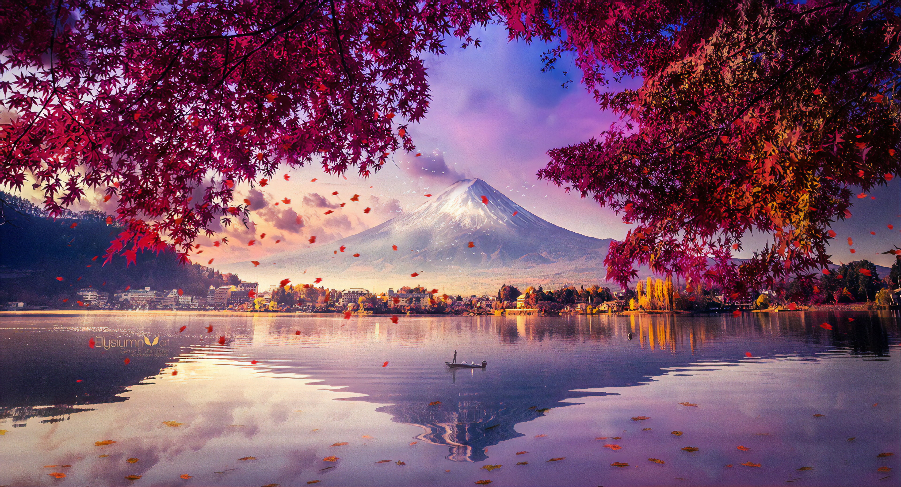
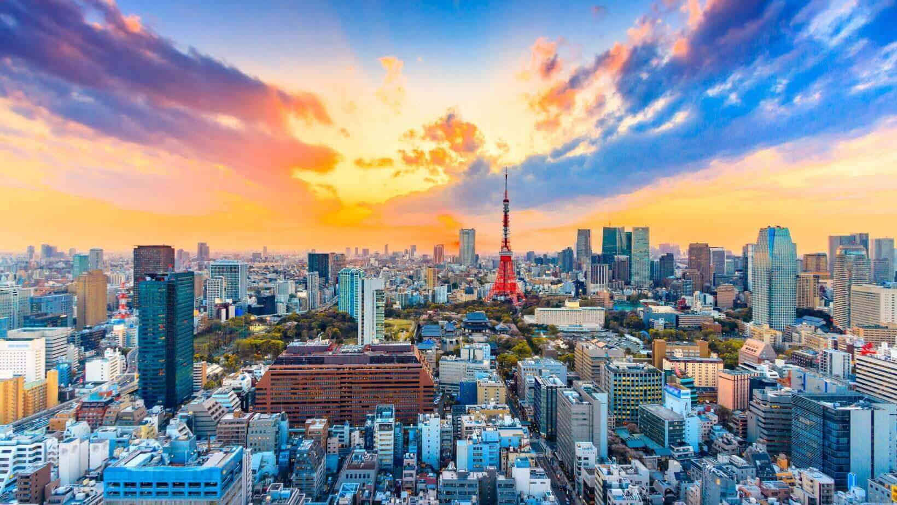
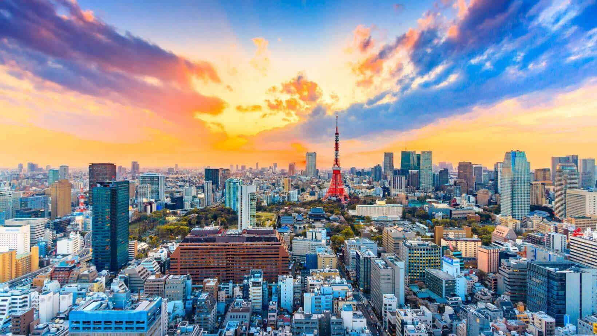
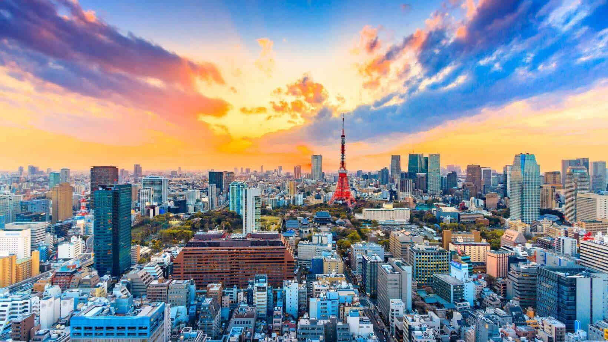
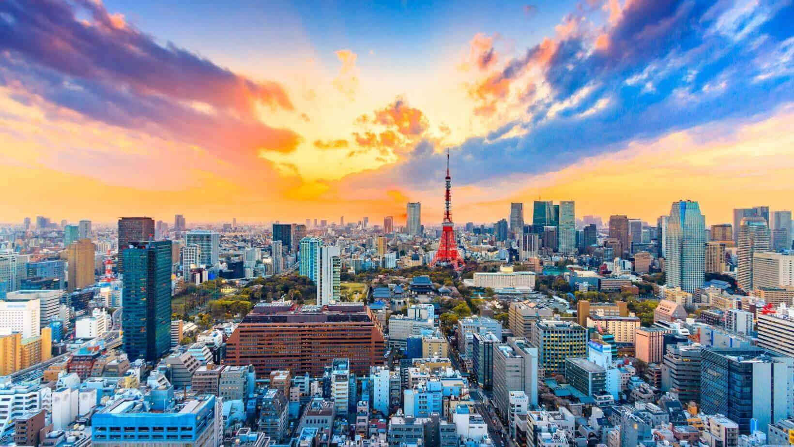

.jpg) 




Mount Fuji, a majestic stratovolcano, stands as Japan's highest peak, reaching 3,776.24 meters (12,389 feet) above sea level. This iconic symbol of Japan, often depicted in art and culture, draws millions of visitors each year. This iconic symbol of Japan, often depicted in art and culture, draws millions of visitors each year. Its slopes, covered in lush forests and volcanic rock, are a popular destination for hikers and nature enthusiasts. The summit, shrouded in snow for much of the year, offers breathtaking panoramic views of the surrounding landscape.
Tokyo Tower, a striking red and white structure, stands tall as a symbol of Tokyo's modern skyline. As one of the city's most iconic landmarks, it offers breathtaking panoramic views of the bustling metropolis from its observation decks. Visitors can marvel at the city's sprawling cityscape, including famous landmarks like the Tokyo Skytree and Tokyo Bay. Beyond its stunning views, Tokyo Tower also houses various shops, restaurants, and entertainment facilities, making it a popular destination for both locals and tourists.
Itsukushima Shrine, a UNESCO World Heritage site, is a captivating landmark located on Miyajima Island near Hiroshima. Renowned for its iconic "floating" torii gate, the shrine appears to rise from the sea at high tide, creating a breathtaking sight. The shrine's intricate wooden structures, vibrant vermilion color, and serene setting offer a glimpse into Japan's rich cultural heritage. Visitors can explore the shrine's various halls and pavilions, marvel at its stunning architecture, and experience the tranquility of the island.
.png)
The Hiroshima Peace Memorial (Genbaku Dome) was the only structure left standing in the area where the first atomic bomb exploded on 6 August 1945. Through the efforts of many people, including those of the city of Hiroshima, it has been preserved in the same state as immediately after the bombing. Not only is it a stark and powerful symbol of the most destructive force ever created by humankind; it also expresses the hope for world peace and the ultimate elimination of all nuclear weapons.